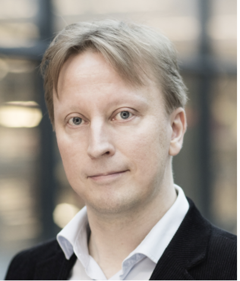
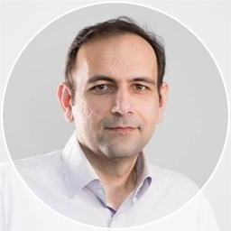
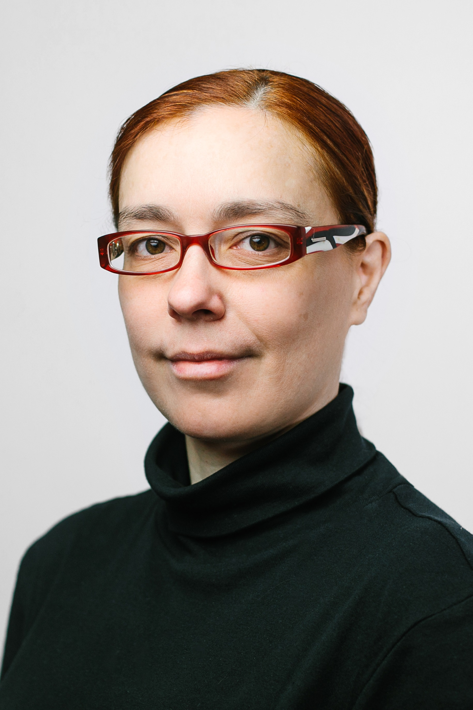

2021 IEEE SPS Cycle 2 Virtual School on
Networked Federated Learning: Theory, Algorithms and Applications
28.3. - 01.04.2022.
Click here for a free registration.
This school teaches theoretic underpinnings and practical algorithms for networked federated learning (FL). Networked FL provides tailored (personalized) models for local datasets that are related by some complex network structure. Such networked data arises in several important application domains such as pandemics, meteorology or the industrial internet of things.
School Format
This school consists of virtual lectures (via zoom) and exercises. The lectures will be recorded and made available on this site as well as on this Youtube playlist. The exercises consist of Python notebooks and a discussion forum (Slack): click here to join
The seasonal school is also offered as the elective course CS-E407508 - “Special course in Machine learning and Data science: Networked Federated Learning” (2 credits) at Aalto University. You might be able to earn the credits also if you are enrolled as student at any university (of applied sciences) in Finland (click here for more info).
Exercises
Each exercise consists of a Python notebook (click here for setting up notebook environment) that contains ready made starter code (“Demos”) and some task descriptions in the end. You have to work on the exercises independently but are most welcome to ask questions on our school discussion forum (slack).
Notebook for Exercise 1 Notebook for Exercise 2 Notebook for Exercise 3
Exercise Support: Dr. Yu Tian Dr. Shamsiiat Abdurakhmanova Dick MSc. Dick Carrillo Melgarejo
Lectures (times are EEST, local Helsinki time)
Prof. Alex Jung, Aalto University Lecture: School Logistics. Introduction to Networked Federated Learning. slides Date and Time: Mo., 28.03.2022 at 11:00- 13:00 (local Helsinki time) recording: click here slides: click here |
 |
Prof. Konstantin Avratchenkov, INRIA Lecture: Basics of spectral graph theory Date and Time: Tue., 29.03.2022 at 11:00- 13:00 (local Helsinki time) slides: click here |
|  | Prof. Simo Särkkä, Aalto University Lecture: Parallel/distributed methods for state-space models Date and Time: Wed., 30.03.2022, 10:00 - 11:00 (local Helsinki time) recording: click here slides: click here |
|  | Dr. Hamed R. Tavakoli, Nokia Technologies Lecture: Compact and Efficient Neural Networks, Steps Towards Communication Efficient Federated Learning Date and Time: Wed., 30.03.2022, 12:30 - 13:30 (local Helsinki time) recording: click here |
Dr. Irene Schicker, Central Institute for Meteorology and Geodynamics (ZAMG) Date and Time: Thu., 31.03.2022 at 11:00 - 12:00 (local Helsinki time) zoom link: TBA |
 |
Dr. Wojciech Samek, Fraunhofer Heinrich Hertz Institute Lecture: Towards Communication-Efficient and Personalized Federated Learning Date and Time: Thu., 31.03.2022 at 13:00 - 14:00 (local Helsinki time) zoom link: TBA |
 |
Prof. Carlo Fischione, KTH Stockholm Lecture: Communication-Computation Efficient Distributed Machine Learning Date and Time: Thu., 31.03.2022 at 14:30 - 15:30 (local Helsinki time) zoom link: TBA |
|  | Dipl. -Ing. Anna Saranti, TU Graz and Medical University Graz Lecture: Tackling the problem of “bad” explanations with the Human-in-the-Loop principle Date and Time: Fr., 01.04.2022 at 11:00 - 12:00 (local Helsinki time) zoom link: TBA |
Organizing Committee:
Acknowledgment
This seasonal school is supported by the IEEE Signal Processing Society and the Department of Computer Science at Aalto University. The school is also supported by the TalTech Industrial project. TalTech Industrial has received funding from the European Union’s Horizon 2020 research and innovation programme under grant agreement No 952410. We also acknowledge support received from the Academy of Finland, via the project ‘‘Intelligent Techniques in Condition Monitoring of Electromechanical Energy Conversion Systems,’’ (decision number 331197).